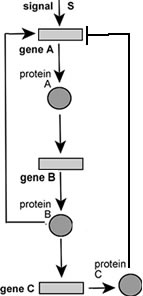
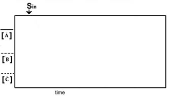

possible tutorial applet
Here is a network of genes (rectangles) and proteins (circles). Lines that end in arrows indicate a positive effect; lines that end in a bar indicate a negative effect. Originally the genes A, B and C are off. A turns on in response to the compound S. Assume that the A, B & C proteins are similar in terms of lenght and stabiliy. On the graph indicate how the concentrations of A, B and C proteins change after S is added.
